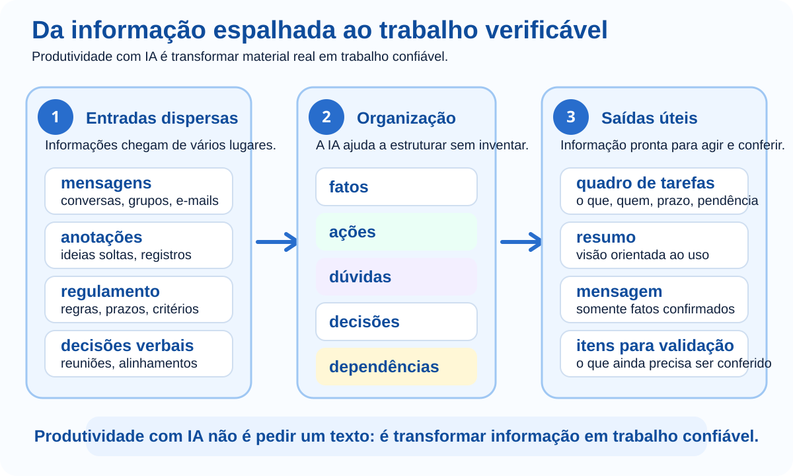

É fim de tarde e a equipe que organiza a Feira de Projetos tenta descobrir o que ainda falta. Há decisões no grupo de mensagens, anotações de uma reunião, um regulamento em PDF e tarefas que alguém prometeu fazer verbalmente. Todo mundo trabalhou, mas ninguém consegue responder com segurança: o que já está decidido, o que ainda depende de alguém e o que pode bloquear o evento?
É aqui que a IA pode ajudar — não como uma máquina de “produzir texto”, mas como apoio para transformar material real em trabalho utilizável. Neste módulo, você acompanhará essa organização avançar: fonte → separação do que sabemos → ações → dependências → comunicação → conferência.
Em Comunicação com IA você aprendeu a fornecer contexto, trabalhar com referências, corrigir o rumo e validar respostas. Agora essas habilidades serão usadas dentro de um fluxo de trabalho real, no qual uma decisão errada pode virar atraso, retrabalho ou informação enviada para a pessoa errada.
Produtividade não é gerar mais conteúdo. É reduzir confusão, retrabalho e incerteza sem transformar lacunas em fatos inventados.

Na reunião da feira, alguém diz: “junta tudo e pede para a IA organizar”. Antes disso, surge uma pergunta mais importante: organizar para quê? A coordenação precisa enxergar pendências; quem executa precisa saber tarefas; participantes precisam receber apenas orientações confirmadas.
Pode nascer um texto bonito que não ajuda ninguém a agir.
Agora sabemos o que deve existir ao final e podemos verificar se a resposta serve.
Pergunte: depois que eu receber essa resposta, o que conseguirei fazer que hoje ainda não consigo?
A equipe reúne o que realmente foi registrado. Não são dados perfeitos; são anotações como aparecem no trabalho cotidiano:
Se a IA não receber esse material, terá de preencher lacunas. O primeiro ganho de produtividade, portanto, não é escrever: é parar de adivinhar.
Se aparecer um nome, prazo ou decisão que não estava nas anotações, a organização já começou contaminada.
“Laboratório 2 reservado” e “verificar extensão elétrica” parecem apenas duas linhas, mas exigem comportamentos diferentes. A primeira informa algo já confirmado; a segunda precisa provocar uma ação.
Classifique mentalmente “abertura prevista para 19h, mas falta confirmação da direção”. Ela não pode ser tratada como horário final. A parte “19h” é uma previsão; a confirmação continua pendente.
Depois de separar o material, a pergunta da equipe muda: o que precisa acontecer agora? A IA pode transformar as anotações em um quadro de trabalho, mas deve manter visível aquilo que ainda falta definir.
| Tarefa | Responsável | Prazo | Situação |
|---|---|---|---|
| Preparar etiquetas | Marina | Não definido | Responsável confirmado |
| Testar projetor | João | Até quarta-feira | Confirmado nas anotações |
| Verificar extensão elétrica | Não definido | Não definido | Pendência aberta |
| Imprimir certificados | Não definido | Não definido | Precisa de responsável |
Uma tabela parece “oficial”. Se a IA inventar um responsável para preencher um campo vazio, a apresentação organizada do erro pode torná-lo mais convincente.
A equipe já sabe o que está confirmado. Agora surgem três pedidos quase ao mesmo tempo: a direção quer um resumo, a equipe quer pendências e os participantes querem horário e local. Ser produtivo não significa criar três versões independentes e correr o risco de cada uma contar uma história diferente.
Decisões, riscos e itens que precisam de aprovação.
Tarefas, responsáveis, prazos e pendências.
Somente orientações já confirmadas.
A produtividade está em reaproveitar uma fonte confiável, não em pedir que a IA invente um novo texto do zero a cada público.
No dia seguinte chega um documento de três páginas com orientações para uma atividade externa ligada à feira. Um aluno quer saber o que levar; a coordenação precisa saber horários, responsabilidades e impedimentos. Ambos pedem “um resumo”, mas precisam tomar decisões diferentes.
Pode ficar curto e apagar justamente o que muda uma ação.
Se uma informação removida do resumo puder fazer alguém perder horário, documento ou autorização, ela provavelmente não era detalhe.
Com material, tarefas e público definidos, alguém propõe: “peça para a IA ler tudo, montar o plano, escrever as mensagens e entregar a versão final”. Parece mais rápido. Mas, se o resultado trouxer um horário errado, fica difícil descobrir se o problema surgiu na leitura da fonte, na organização ou na escrita.
Cada etapa vira um ponto de controle. Você consegue localizar o erro antes que ele seja carregado para o restante do fluxo.
A coordenação recebe “Regulamento_final_2.pdf”. Ele parece quase igual ao anterior, mas ninguém sabe se mudou um prazo, uma obrigação ou apenas a redação. Ler os dois rapidamente e confiar na memória pode esconder justamente a diferença que importa.
A IA ajuda a localizar diferenças; depois, a pessoa responsável volta aos trechos originais e confirma as mudanças relevantes.
Se o documento tiver valor oficial, jurídico, financeiro ou acadêmico, a comparação é um mapa para a conferência — não substitui a fonte.
Os certificados aparecem no quadro como “a fazer”. Só que a lista final de participantes ainda não chegou. Nesse momento, a equipe percebe que uma lista de tarefas não mostra necessariamente o que depende do quê.
Prioridade deixa de ser “o que parece urgente” e passa a considerar o que destrava o restante do trabalho.
Toda semana alguém volta a separar decisões, tarefas, responsáveis e dúvidas. Esse é o momento em que vale transformar um processo compreendido em um modelo reutilizável — sem reaproveitar dados antigos.
O valor do modelo está na estrutura de trabalho que funcionou. Cada nova reunião continua precisando de material e contexto atualizados.
Para descobrir quantos alunos confirmaram presença, alguém pensa em enviar a planilha inteira. Ela também contém nome completo, telefone, e-mail, documento e observações internas. De repente, o problema deixa de ser “como analisar rápido?” e passa a incluir o que realmente precisa ser compartilhado.
Por que este dado precisa estar aqui? Se ele não muda a tarefa, retire-o.
A equipe está prestes a distribuir uma mensagem para famílias. O horário de saída aparece como 7h30, mas o transporte ainda não confirmou. Uma resposta da IA pode estar perfeitamente escrita e, ainda assim, ser prematura.
Nomes, datas, valores e decisões aparecem na fonte?
O que ainda está pendente ficou visível?
O destinatário recebe somente o que precisa?
Alguma informação ainda depende de uma decisão humana?
O fluxo não termina quando a IA produz. Termina quando o resultado está pronto para ser usado com segurança.
Agora mude de contexto. Uma turma fará uma visita técnica e as informações chegaram em momentos diferentes. O objetivo é verificar se você aprendeu o processo, e não apenas a história da feira.
Procure pessoa, horário, prazo ou responsabilidade que não apareça nas anotações.
Decida você mesmo: essa mensagem já pode ser enviada? Explique usando as evidências do material.
A qualidade veio da sequência fonte → extração → conferência → organização → comunicação → validação, não de uma frase mágica.
Escolha um problema pequeno e real: preparação de aula, reunião, estudo, evento, projeto, documento ou lista de tarefas. Não comece pela ferramenta.
Ao terminar, mostre onde a IA economizou trabalho, qual erro ela poderia ter introduzido e qual decisão continuou sendo sua.